Map Work & Projection
Comprehensive Study Notes for Final Examination
Introduction to Basic Geodesy
Historical Perspective
Geodesy is the science of measuring and understanding Earth's geometric shape, orientation in space, and gravity field. The study of Earth's shape has fascinated humans for thousands of years.
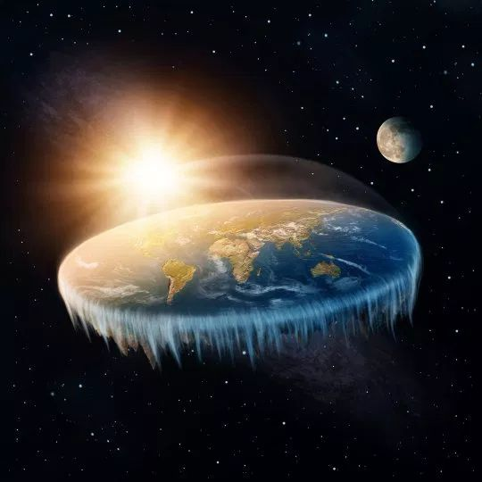
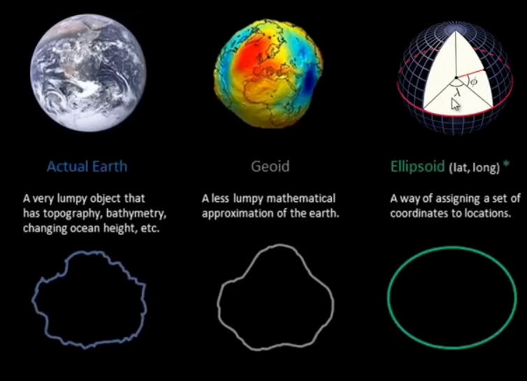
Aristotle's Proof (350 BC)
Aristotle provided one of the earliest scientific proofs that Earth is round using lunar eclipse observations:
- During a lunar eclipse, Earth casts a shadow on the Moon
- The shadow is always circular, regardless of the eclipse's position
- Only a sphere always casts a circular shadow from every angle
- A flat disk would cast elliptical shadows at different angles
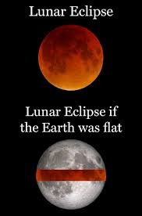
💡 Key Point
Aristotle also observed that ships disappear hull-first when sailing away, and new stars appear when traveling south — both evidence of a curved Earth.
Eratosthenes' Earth Measurement (240 BC)
Eratosthenes, a Greek mathematician, calculated Earth's circumference with remarkable accuracy:
- He knew that at Syene (Aswan), the Sun was directly overhead on the summer solstice
- In Alexandria, about 800 km north, the Sun cast a shadow at 7.2° angle
- 7.2° is 1/50th of a full circle (360°)
- Therefore, Earth's circumference = 800 km × 50 = 40,000 km
- Modern value: ~40,075 km — incredibly close!
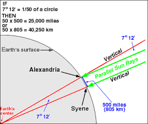
✨ Amazing Fact
Eratosthenes achieved this accuracy over 2,200 years ago with just a stick, a well, and basic geometry!
Newton's Contribution
Sir Isaac Newton proposed that Earth is not a perfect sphere but an oblate spheroid — flattened at the poles and bulging at the equator due to rotation.
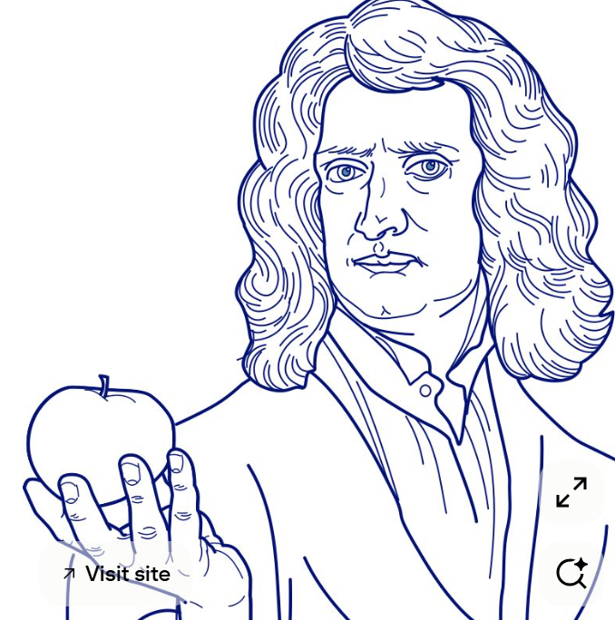
🌍 Why Earth is Oblate?
Earth's rotation creates centrifugal force that pushes material outward at the equator, making the equatorial radius (~6,378 km) slightly larger than the polar radius (~6,357 km).
Shape and Size of Earth
Geoid
The Geoid is Earth's true physical shape — an irregular surface determined by gravity. It follows mean sea level and accounts for mountains, valleys, and density variations.
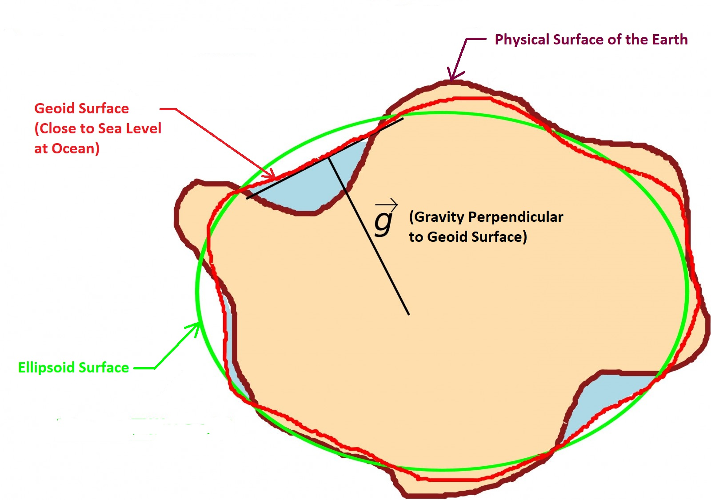
Reference Ellipsoid
A Reference Ellipsoid is a smooth mathematical model (flattened sphere) used for calculations. It approximates the geoid but is much simpler for mapping.
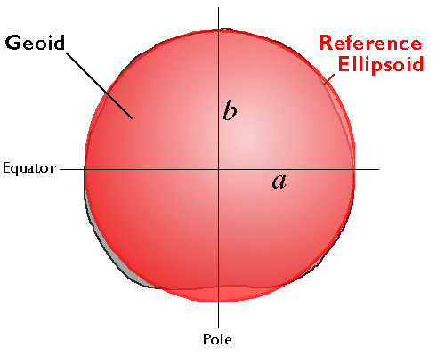
| Parameter | Value |
|---|---|
| Equatorial Radius | 6,378.137 km |
| Polar Radius | 6,356.752 km |
| Flattening | 1/298.257 |
| Surface Area | 510 million km² |
The Orange Peel Theory
A classic analogy for understanding why flat maps distort: just as you cannot flatten an orange peel without tearing or stretching it, you cannot represent Earth's curved surface on a flat map without some distortion.
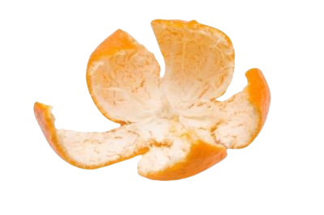

Introduction to Coordinate Systems
Basic Coordinate Systems
Coordinate systems provide a framework to define positions on Earth's surface. They are essential for mapping, navigation, and GIS applications.
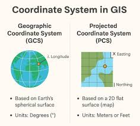
Latitude and Longitude
The most common global coordinate system uses angular measurements:
- Latitude: Angular distance north/south from the Equator (0° to 90° N/S)
- Longitude: Angular distance east/west from the Prime Meridian (0° to 180° E/W)
- Lines of latitude are called parallels
- Lines of longitude are called meridians
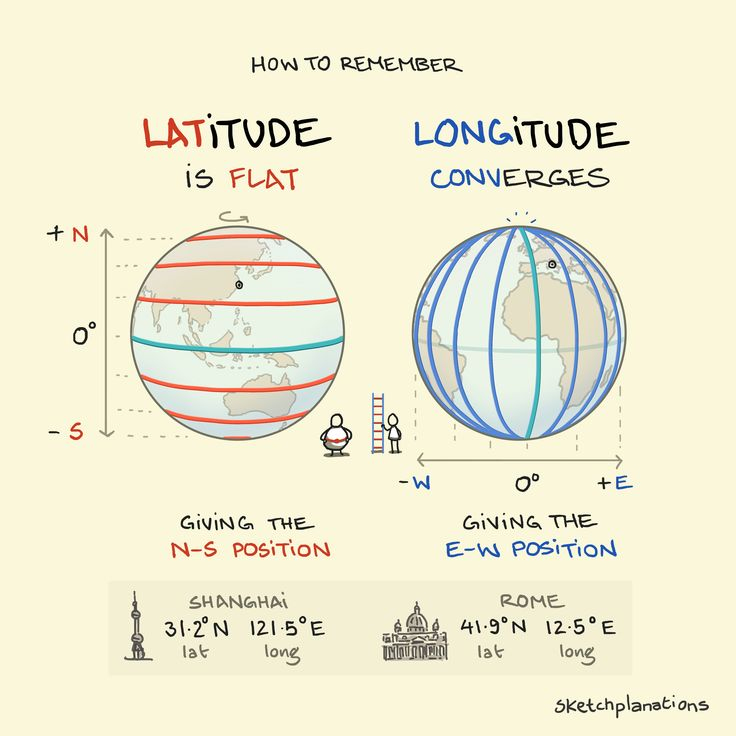
📍 Prime Meridian
Passes through the Royal Observatory in Greenwich, London. Established in 1884 at the International Meridian Conference.
ECEF (Earth-Centered Earth-Fixed)
ECEF is a 3D Cartesian coordinate system with its origin at Earth's center of mass:
- X-axis: Points to the intersection of the Equator and Prime Meridian
- Y-axis: 90° east of X-axis on the Equator
- Z-axis: Points through the North Pole
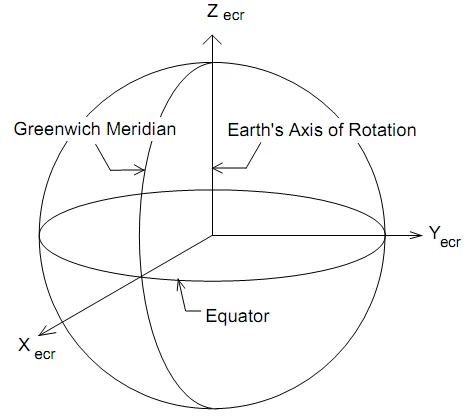
Used in GPS and satellite navigation because it provides precise 3D positioning without angular ambiguity.
UTM (Universal Transverse Mercator)
UTM divides Earth into 60 zones, each 6° of longitude wide:
- Each zone has its own central meridian
- Coordinates are given in meters (Eastings and Northings)
- Easting is measured from the zone's central meridian (500,000m false easting)
- Northing is measured from the Equator
- Avoids the distortion problem of global projections
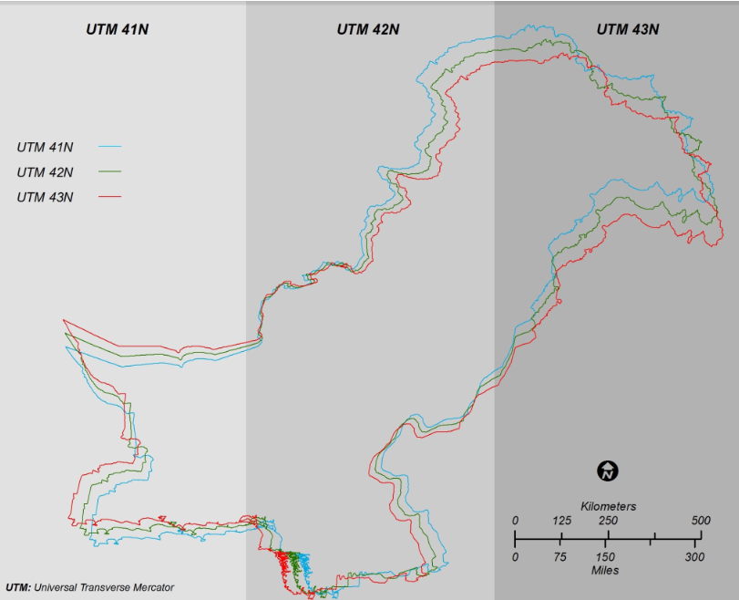
⚠️ Important
Pakistan falls in UTM Zones 40, 41, and 42. Always mention the zone number with UTM coordinates!
GEOREF (World Geographic Reference System)
A simple alphanumeric system for air navigation:
- Uses 15° quadrangles identified by letters
- Further subdivided into 1° squares
- Easy to communicate over radio
- Less precise than UTM but simpler
Universal Polar Stereographic (UPS)
Used for areas above 84°N and below 80°S where UTM becomes impractical:
- Two zones: North Pole and South Pole
- Based on Stereographic projection
- Scale factor at pole: 0.994
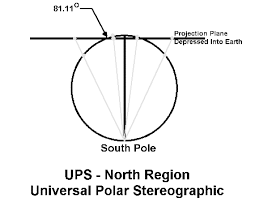
National Grid Systems
Countries often use their own grid systems for detailed mapping:
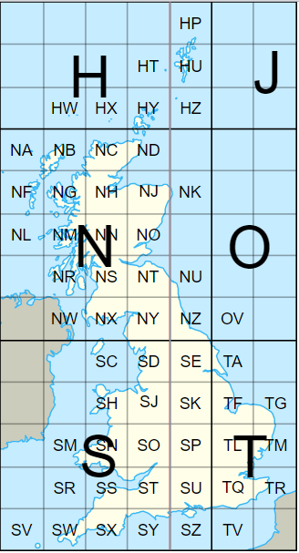

State Plane Coordinates
Used in the USA — each state has its own coordinate system:
- Designed to minimize distortion within each state
- Uses Transverse Mercator or Lambert Conformal Conic projections
- More accurate than UTM for state-level work
Miscellaneous Systems
Postal Codes
Not a true coordinate system but used for location referencing. ZIP codes in USA, postcodes in UK and Pakistan.
Maidenhead Grid Squares
Used by amateur radio operators. Divides world into grid squares for easy location sharing.
Navigation Systems
GPS (Global Positioning System), GLONASS (Russia), Galileo (EU), BeiDou (China) — all use coordinate systems for satellite-based positioning.
Projection Systems
Introduction to Map Projections
A map projection is a systematic transformation of the latitudes and longitudes of locations from the surface of a sphere or ellipsoid into locations on a plane. All projections distort something — the art is choosing which properties to preserve.
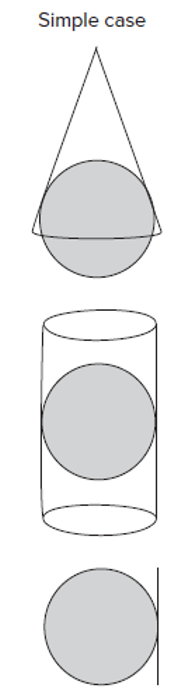
🎯 Projection Properties
Conformal: Preserves angles (shapes locally)
Equal Area: Preserves area ratios
Equidistant: Preserves distances from center
Azimuthal: Preserves directions from center
Cylindrical Projections
Imagine wrapping a cylinder around Earth and projecting the surface onto it:
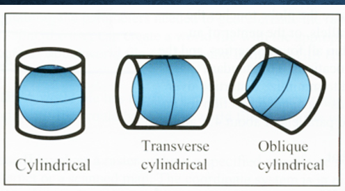
Simple Cylindrical
The simplest projection where meridians and parallels are straight, equally spaced lines.
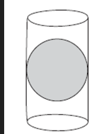
Mercator Projection
Most famous cylindrical projection, developed by Gerardus Mercator in 1569:
- Conformal — preserves angles, useful for navigation
- Meridians are vertical, parallels are horizontal
- Scale increases toward poles (Greenland appears huge)
- Standard for nautical charts
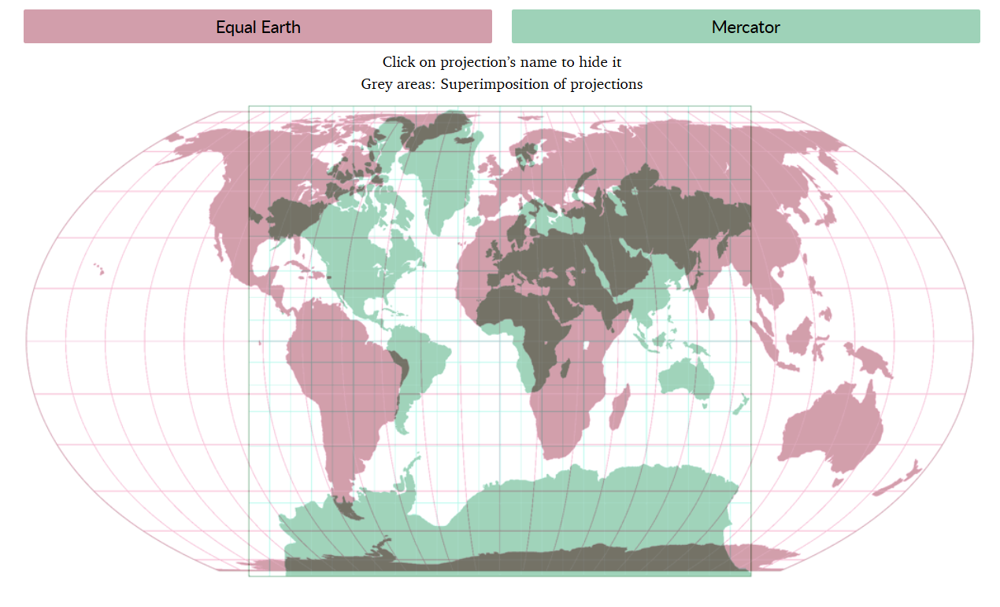
Transverse Mercator
Cylinder is turned sideways (transverse), touching along a meridian instead of the Equator:
- Better for areas with north-south extent
- Used in UTM system
- Central meridian has true scale
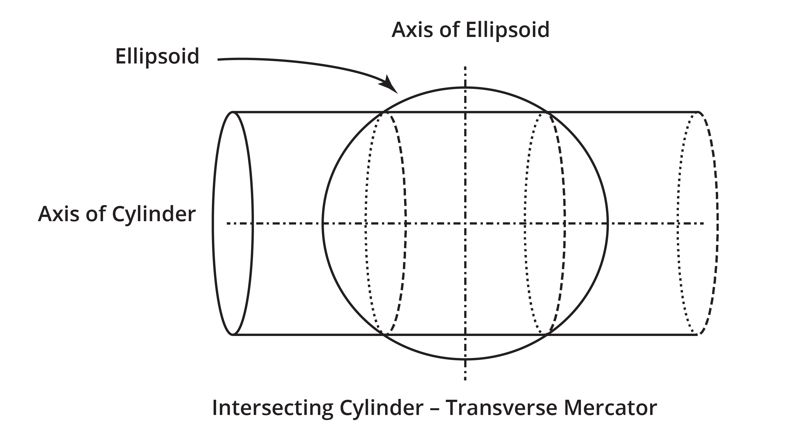
Secant Cylinder Projections
The cylinder cuts through the Earth (secant) rather than just touching (tangent):
- Two standard parallels where scale is true
- Reduces overall distortion
- Used in many practical applications
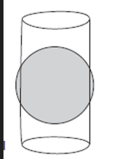
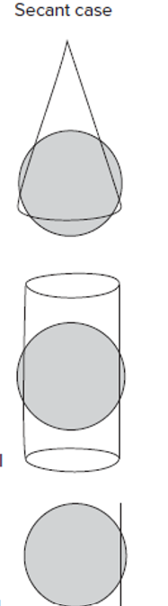
Conic Projections
Imagine a cone placed over Earth, touching along a parallel:
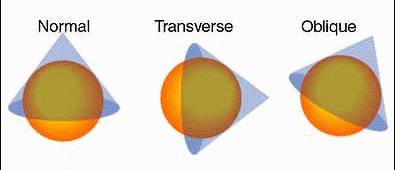
Simple Conic
The cone touches Earth along one standard parallel:
- Parallels are arcs of concentric circles
- Meridians are straight lines radiating from apex
- Good for mid-latitude regions
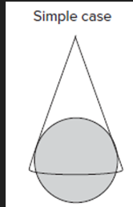
Secant Conic
The cone cuts through Earth along two standard parallels:
- Two standard parallels with true scale
- Less distortion between the parallels
- Most common conic projection in practice
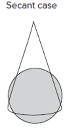
✅ Best For
Conic projections are ideal for countries or regions that extend east-west in the mid-latitudes (e.g., USA, Russia, China).
Azimuthal Projections
Project Earth's surface onto a flat plane touching at a point:
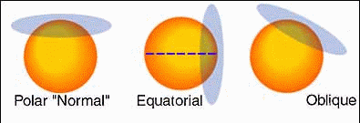
Simple (Tangent) Azimuthal
The plane touches Earth at one point (usually a pole):
- Parallels are concentric circles
- Meridians are straight lines radiating outward
- Preserves directions (azimuths) from center
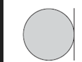
Secant Azimuthal
The plane cuts through Earth:
- Standard parallel is a circle of true scale
- Reduces overall distortion
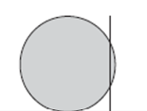
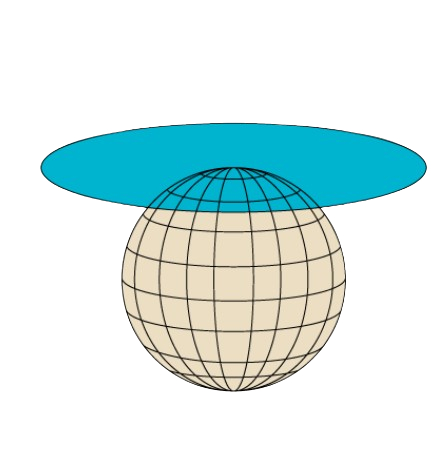
🎯 Best For
Azimuthal projections are perfect for polar regions and situations where direction from a central point is important (e.g., air route planning).
Miscellaneous Projections
Unprojected Maps
These are not true projections but simply plot latitude and longitude as if they were x,y coordinates:
- Also called Plate Carrée or Equirectangular
- Very simple but highly distorted
- Used for quick data visualization
Space Oblique Mercator
A specialized projection for satellite imagery:
- Follows the ground track of a satellite
- Minimizes distortion for Landsat images
- Very complex mathematically
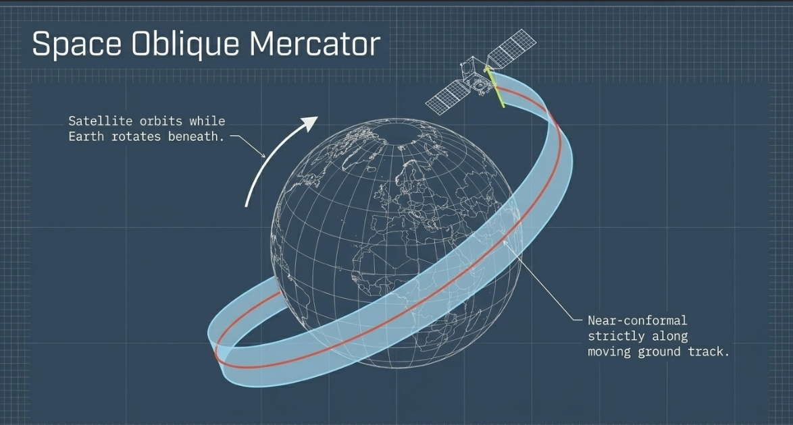
Geodetic Datums
Introduction to Geodetic Datums
A geodetic datum is a reference frame that defines the size and shape of Earth and the origin and orientation of coordinate systems. It is the foundation of all precise mapping and surveying.
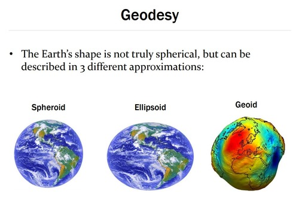
🔑 Datum = Ellipsoid + Origin + Orientation
A datum is not just the ellipsoid shape — it also includes where the ellipsoid is positioned relative to Earth's center and how it is oriented.
Geometric Models & Earth Surfaces
Topographic Surface
The actual physical surface with mountains, valleys, and oceans.
Geoid
Equipotential surface of gravity, approximating mean sea level.
Reference Ellipsoid
Mathematical model — smooth, regular surface for calculations.
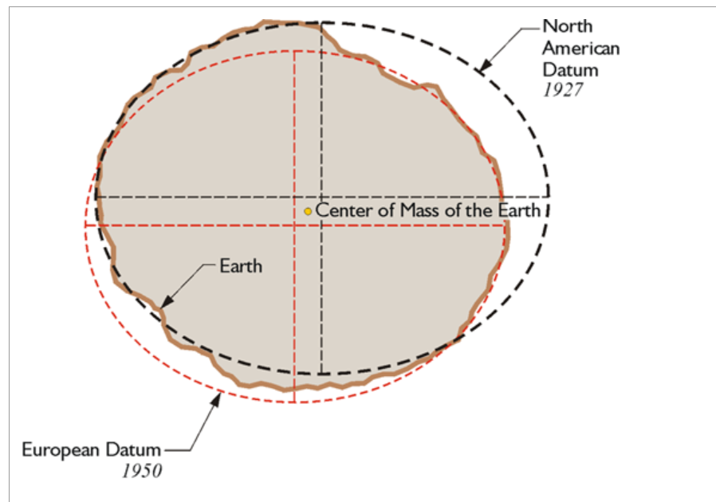
Types of Geodetic Datums
🌍 Global Datums
Centered at Earth's center of mass. Used for global applications like GPS.
Examples: WGS84, ITRF
📍 Local Datums
Aligned to fit a specific region or country. Better accuracy for that area.
Examples: NAD27 (USA), OSGB36 (UK)
Datums in Common Use
| Datum | Ellipsoid | Type | Primary Use |
|---|---|---|---|
| WGS84 | WGS84 | Global | GPS, Global mapping |
| NAD83 | GRS80 | Regional | North America |
| ED50 | International 1924 | Regional | Europe |
| OSGB36 | Airy 1830 | Local | Great Britain |
| Tokyo Datum | Bessel 1841 | Local | Japan |
Datum Shifts and Conversions
When data from different datums must be combined, a datum transformation is needed:
- Three-parameter shift: Simple X, Y, Z translation (least accurate)
- Seven-parameter shift: Adds rotation and scale (more accurate)
- Grid-based methods: Most accurate, uses interpolation between known points
⚠️ Important for Exam
Using the wrong datum can cause position errors of hundreds of meters! Always verify which datum your data uses.
Map Elements & Map Types
Essential Map Elements
Every professional map must include these elements for proper interpretation:
- Title: Describes the map's subject and area
- Legend: Explains symbols, colors, and patterns
- Scale: Shows the ratio between map distance and real distance (graphic, verbal, or representative fraction)
- North Arrow: Indicates orientation (True North, Magnetic North, Grid North)
- Grid: Coordinate system lines for position reference
- Projection Name: Identifies the projection used
- Datum: Specifies the reference datum
- Date: When the map was made or data collected
- Author/Source: Who created the map
- Neatline: Border framing the mapped area
Types of Maps
General Reference Maps
Show a variety of features — roads, rivers, cities, boundaries. Example: Topographic maps, Atlas maps.
Thematic Maps
Focus on a specific theme or topic. Example: Climate maps, population density maps, soil maps.
Topographic Maps
Show elevation through contour lines. Essential for engineering and outdoor activities.
Cadastral Maps
Show property boundaries and land ownership. Used in legal and real estate matters.
Navigation Charts
Designed for maritime or air navigation. Include depth soundings, hazards, airways.
Planimetric Maps
Show horizontal positions only, without elevation data. Used in urban planning.
Map Scale
Scale represents the relationship between distance on the map and distance on the ground:
- Large Scale: 1:10,000 or larger — shows small areas with great detail
- Medium Scale: 1:10,000 to 1:500,000 — moderate detail
- Small Scale: 1:500,000 or smaller — shows large areas with less detail
💡 Memory Trick
"Large scale = Large detail, Small area" — The fraction 1/10,000 is a larger number than 1/1,000,000, so it shows more detail.
Map Symbols and Colors
Standard cartographic conventions:
- Blue: Water (rivers, lakes, oceans)
- Green: Vegetation, forests, parks
- Brown: Contour lines, elevation
- Black: Man-made features, boundaries, names
- Red: Major roads, important features
Important Exam Questions
📋 Short Questions (2-5 Marks)
- What is Geodesy? Write a brief history of its development.
- How did Aristotle prove that Earth is round using lunar eclipse?
- Explain Eratosthenes' method of calculating Earth's circumference.
- Differentiate between Geoid and Reference Ellipsoid.
- What is the Orange Peel Theory in map projection?
- Define Latitude and Longitude with a diagram.
- What is ECEF coordinate system? Explain its axes.
- Write a note on UTM coordinate system.
- What is UPS and when is it used?
- Define map projection and explain why all projections distort.
- What is a Geodetic Datum? Why is it important?
- Differentiate between Global and Local datums with examples.
- What is datum shift? Why is it necessary?
- List the essential elements of a map.
- What is the difference between large scale and small scale maps?
- Explain the concept of True North, Magnetic North, and Grid North.
- What is a secant projection? How does it differ from a tangent projection?
- Write a note on Space Oblique Mercator projection.
- What is GEOREF system?
- Explain the British National Grid system.
📝 Long Questions (10-15 Marks)
- Geodesy Discuss the historical development of Geodesy from ancient Greek scholars to modern times. Explain Aristotle's lunar eclipse proof and Eratosthenes' calculation method with diagrams.
- Coordinate Systems Explain different types of coordinate systems used in mapping. Compare and contrast Geographic (Lat-Long), UTM, ECEF, and UPS systems with their applications.
- Projections Classify map projections based on their geometric surface of projection. Explain Cylindrical, Conic, and Azimuthal projections with diagrams, giving examples of each type.
- Projections Compare tangent and secant projections. Explain with diagrams how secant projections reduce distortion. Discuss secant cases for cylindrical, conic, and azimuthal projections.
- Mercator Explain the Mercator projection in detail. Discuss its properties, advantages, disadvantages, and why it is widely used for navigation. Compare it with Transverse Mercator.
- Datums What is a Geodetic Datum? Explain its components (ellipsoid, origin, orientation). Discuss different types of datums with examples. Explain datum transformation and its importance.
- Map Elements Describe the essential elements of a map. Explain the importance of each element. Discuss different types of maps and their specific uses.
- Miscellaneous Write detailed notes on: (a) National Grid Systems (b) State Plane Coordinates (c) Maidenhead Grid Squares (d) Navigation systems and their coordinate requirements.
- Comprehensive Explain the complete workflow from field data collection to final map production, mentioning the role of geodesy, coordinate systems, projections, and datums at each stage.
- Comparison Compare WGS84 with local datums. Why is WGS84 considered a global datum? Discuss the problems that arise when combining data from different datums and how they are solved.
🎯 Diagram-Based Questions
- Draw and label the following with all components:
- Lat-Long coordinate system on a globe
- ECEF coordinate system showing X, Y, Z axes
- UTM zone division of the world
- Simple cylindrical projection development
- Simple conic projection development
- Simple azimuthal projection from the pole
- Secant vs Tangent cylinder
- Geoid vs Ellipsoid cross-section
- Eratosthenes' calculation geometry
- Lunar eclipse shadow proof